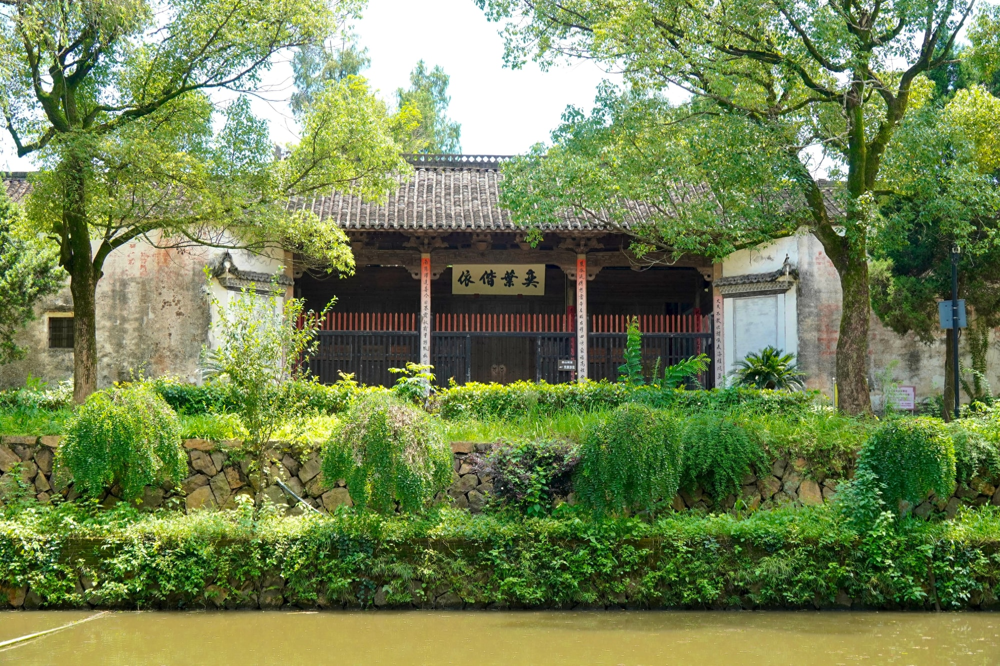
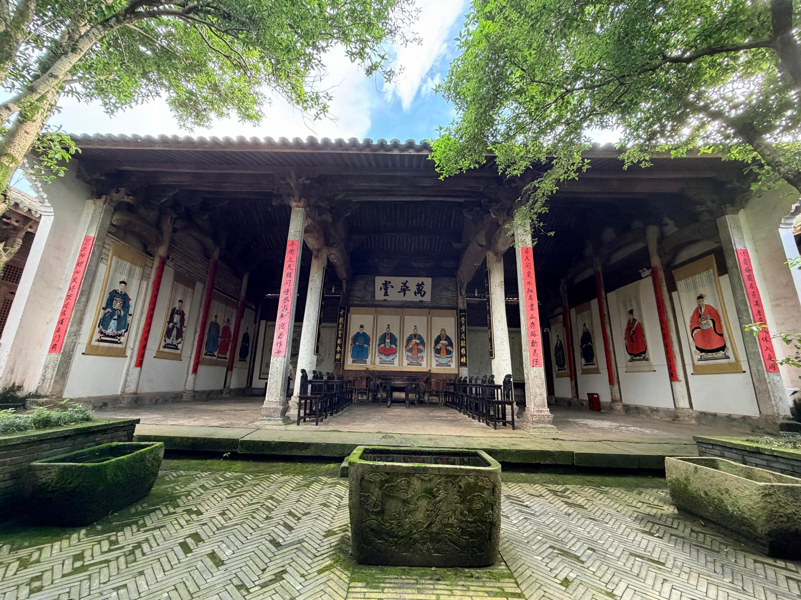

国保宗祠建筑
祠宇深深，礼脉绵长西山祠堂
西山祠堂又名玉华叶氏祖庙，是新叶村最早建立的祠堂之一。祠堂隔着一泓水塘临水而立，白墙、灰瓦与树影一同映在水面上，是古村中格外安静而庄重的一角。
01
三世祖主持营建
相传，玉华叶氏三世祖叶克诚于元代主持营建西山祠堂。它的建立与叶氏在新叶立村聚族的过程紧密相连：族人在这里祭祀先祖、确认血缘，也以共同的礼仪维系宗族秩序。此后祠堂虽经多次重修，这一凝聚族人的文化作用始终延续。
02
选在村口的祖庙

与许多建在村落中心的祠堂不同，西山祠堂选在村落入口一带。相传它正对三峰山，村民把这座山称作“母亲山”，希望借这样的山水格局凝聚全族人心。西山祠堂与总祠有序堂及各支派祠堂彼此呼应，共同构成新叶村层次丰富的宗祠体系。
03
层层抬升的院落

祠堂沿地势由外向内层层抬高，前后数进院落以天井相隔。走到厅前的天井，青砖墁地，中央与两侧列着石构水槽，四围是粗壮的木构梁架，光线自天井上方落下，空间显得深长而肃穆。这种一进深似一进的格局，也呼应着祠堂在宗族中庄重的身份。